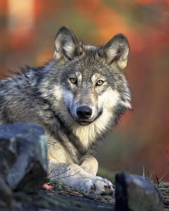

A kutya
A kutya vagy eb (Canis lupus familiaris) ujjon járó emlős ragadozó állat, a szürke farkas (Canis lupus) egy mára kihalt alfajának háziasított formája. Valószínűleg a legrégebben háziasított állatfaj. Az egyetlen olyan emlős állatfaj, amely tudományos nevében megkapta a familiaris, azaz a családhoz tartozó jelzőt. A kutyákat szokás a társállatok sorában emlegetni.
Ezenkívül tágabb értelemben kutyának neveznek a kutyafélék (Canidae) családján belül a valódi kutyaformák (Canini) nemzetségéhez tartozó több más fajt is: ilyenek például a kisfülű kutya (Atelocynus microtis), az ázsiai vadkutya (Cuon alpinus), a nyestkutya (Nyctereutes procyonoides), az afrikai vadkutya vagy hiénakutya (Lycaon pictus) és az őserdei kutya (Speothos venaticus). A háziasított kutyát mindezektől a házikutya elnevezéssel különböztetik meg.

Szürke farkas
A szürke farkas vagy csak egyszerűen farkas (Canis lupus). Tágabb értelemben farkasnak neveznek a kutyafélék (Canidae) családján belül több más fajt is: ezek a prérifarkas (Canis latrans), a vörös farkas vagy rőt farkas (Canis rufus) és a sörényes farkas (Chrysocyon brachyurus). Emellett az aranysakál népies elnevezése, a nádi farkas a szürke farkassal való közeli rokonságára és összetéveszthetőségére utal.
Tovább...
Alfaj
Egy állat- vagy növényfajon akkor tekintjük eltérő alfajoknak,
- ha öröklődő tulajdonságaikban jelentősen különböznek (az alfajok közti különbség lényegesen nagyobb mint az alfajon belüli egyedi variabilitás),
- és ha eltérő földrajzi elterjedési területük van. Az elterjedési terület határán az eltérő alfajok természetesen szabadon kereszteződnek és átmeneti formákat hoznak létre.

Erdei kutya
Az erdei kutya vagy őserdei kutya (Speothos venaticus) Dél-Amerika északi területein mindenütt előfordul; erdőben, mocsárban, szavannán és bozótosban egyaránt megél. Brazíliától kezdve Bolívián át egészen Panamáig terjed az állománya. Manapság ritka állat.
Kisebb falkákban vadászik és kifejezetten nappali állat. Tápláléka kisebb emlősökből áll; olykor gyümölcsöt is eszik. Fogságban 10 évig is élhet.

Afrikai vadkutya
Az afrikai vadkutya vagy hiénakutya (Lycaon pictus) az emlősök (Mammalia) osztályának ragadozók (Carnivora) rendjébe, ezen belül a kutyafélék (Canidae) családjába tartozó faj. Élőhelye Afrika. Tarka színezetű, foltokkal tarkított bundája van, innen ered az angol neve, a painted dog, amely festett kutyát jelent.
Társadalmuk összetettsége az egyik legfigyelemreméltóbb az állatvilágban.